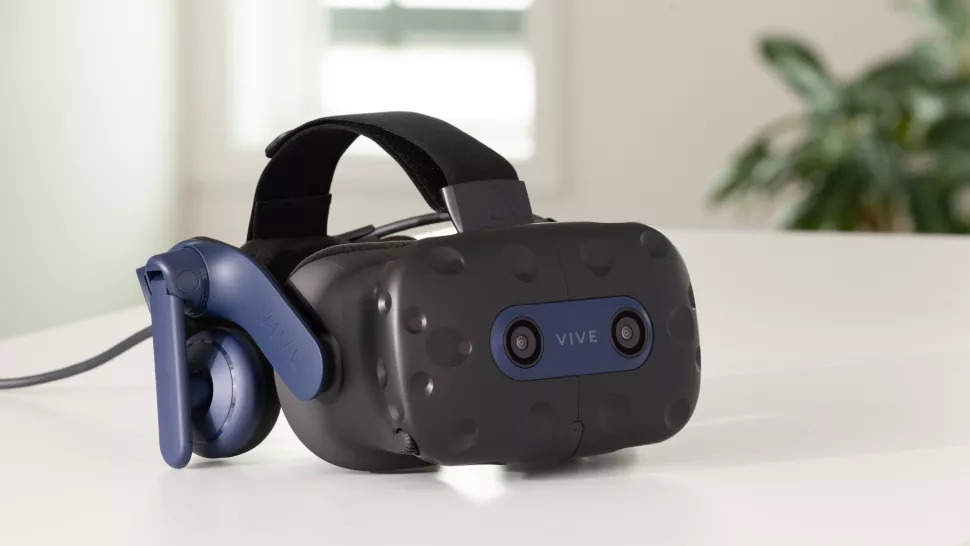

Visores de realidad virtual mas populares
Meta Quest 2
ESPECIFICACIONES
- Pantalla: LCD
- Resolución: 3664x1920
- Frecuencia de actualización: hasta 120 Hz
- Campo de visión: 100 grados
- Controladores: Oculus Touch
- Conexiones: USB tipo C, auriculares de 3,5 mm
El Quest 2 se convierte en más que un auricular VR independiente con Oculus Link. Se convierte en una navaja suiza de realidad virtual todo en uno, capaz de ofrecer excelentes juegos y realidad virtual en movimiento en títulos compatibles con SteamVR y Oculus Rift. Ahora es capaz de tener una frecuencia de actualización de hasta 120 Hz, gracias a una actualización reciente, lo que lo convierte en una oferta aún mejor. El Quest 2 es uno de los auriculares más rápidos para ponerse en marcha en esta lista. Con el seguimiento de adentro hacia afuera y el seguimiento de manos incorporado, puede pasar de desempaquetar a ponerlo en funcionamiento en realidad virtual en solo un par de minutos. El proceso de configuración por primera vez tendrá que quitarse los auriculares, memorizar las contraseñas de Wi-Fi, volver a colocarse los auriculares y luego esperar un par de actualizaciones. Es un poco complicado, pero solo necesita hacerlo una vez y es relativamente rápido de completar. Sin embargo, hay un problema importante al recomendar Oculus Quest 2: su plan para dominar el mundo virtual a través del inicio de sesión obligatorio en una cuenta de Facebook. El Oculus Quest 2 requiere una cuenta de Facebook, aunque los investigadores lograron eludirla(se abre en una pestaña nueva). La compañía dice que es para brindarle un mejor servicio a usted, el cliente, con servicios y productos, aunque durante un buen tiempo allí, el único "beneficio" perceptible fue directamente para alimentar capturas de pantalla. No es bueno. Aparentemente, Meta parecía deshacerse de este inicio de sesión obligatorio, pero actualmente todavía está en su lugar. Si no eres fanático de las prácticas de Meta (de soltera Facebook), entonces será mejor que te desplaces más abajo en la lista para encontrar un auricular VR en el que valga la pena invertir. Si no le molesta, Quest 2 es un dispositivo rápido y fácil para saltar a la realidad virtual. La mayoría de los auriculares con cable requieren el uso de uno o dos sensores externos. El Oculus Quest 2 es una unidad autónoma capaz de rastrear el movimiento del controlador, la mano y los auriculares sin necesidad de un kit adicional, al igual que su predecesor. El seguimiento de adentro hacia afuera en Quest 2 logra mantenerse excepcionalmente bien y sin temor a perder la línea de visión con los sensores.
Valve Index
ESPECIFICACIONES:
- Pantalla: AMOLED
- Resolución: 2880x1600
- Frecuencia de actualización: 120 Hz, modo experimental de 144 Hz
- Campo de visión: ~130 grados
- Controladores: Controladores de índice
- Conexiones: DisplayPort, USB 3.0, USB 2.0
Valve Index cuenta con algunas de las mejores imágenes de cualquier auricular VR comercialmente disponible, con una resolución de pantalla que iguala a Vive Pro, Quest y Odyssey+ pero junto con una frecuencia de actualización de 120 Hz (hasta 144 Hz en un modo experimental actualmente no compatible) . El FOV, a 130°, también es el mejor de su clase, y prácticamente no hay efecto de puerta de pantalla detectable dentro de los auriculares. ¿Todo suena bien? Sí, Valve Index es el abuelo de los auriculares VR. Si la lista de especificaciones no fuera suficiente, el Valve Index se siente muy bien para usar. Es un poco más pesado que el Rift S, lo suficiente como para que el peso se notara en nuestra comparación lado a lado, pero la forma de la correa para la cabeza distribuye mejor ese peso alrededor de la cabeza. Sin mencionar que está construido con materiales de alta calidad cuidadosamente seleccionados, con una distribución de peso de primer nivel. Los materiales de la correa también se sienten de calidad, más como una camiseta acolchada extra suave que un acolchado de espuma estándar, sin molestarme durante sesiones de juego prolongadas. El seguimiento de dedos es una de las características distintivas de Valve's Index, pero aún no hay muchas implementaciones impresionantes. El mejor uso hasta ahora es Aperture Hand Labs(se abre en una pestaña nueva) demostración técnica, que te hace saludar, chocar los cinco y jugar piedra, papel o tijera con una colección de extravagantes robots estilo Portal. Donde los controladores táctiles anteriores solo podían articular el agarre, los controladores Index me permiten dar un pulgar hacia arriba, señalar con pistolas de dedos o incluso ofrecer un saludo Vulcano. No muchos juegos usan el seguimiento de dedos en este momento, lo que significa que fuera de Aperture Hand Labs y Half Life: Alyx, la función puede parecer un poco engañosa. Aún así, hay un gran potencial para futuros juegos.
HTC Vive Pro 2
ESPECIFICACIONES
- Pantalla: LCD
- Resolución: 4896x2448
- Frecuencia de actualización: 120Hz
- Campo de visión: 120 grados
- Controladores: HTC Vive
- Conexiones: DisplayPort 1.2, USB 3.0
El HTC Vive Pro 2 trae consigo una serie de actualizaciones en el frente de la pantalla para convertirlo en una de las opciones principales más impresionantes. La resolución nativa de 2448 x 2448 píxeles por ojo es increíble, y cuando se combina con la frecuencia de actualización de 120 Hz y el campo de visión de 120 grados, se convierte en una de las mejores experiencias de visualización. El Vive Pro 2 es uno de los auriculares convencionales de mayor resolución en los que puede gastar su dinero y también ofrece una ventaja significativa sobre el Quest 2, que se conforma con 3664 x 1920. Es excelente para juegos de alta fidelidad, pero una mejora menos obvia en más títulos de dibujos animados, lo que significa que realmente necesita texturas y modelos de alta resolución para disfrutar realmente de los beneficios que brinda este auricular.Por supuesto, con este tipo de resoluciones, necesitará una máquina de gama alta para aprovechar al máximo estos auriculares, y HTC recomienda una GPU Nvidia GeForce RTX 20-series o Radeon RX 5000-series para mantener una experiencia fluida. Para la prueba, conectamos los auriculares a nuestra PC de prueba de gama alta, que alberga una GeForce RTX 3080(se abre en una pestaña nueva) y un AMD Ryzen 9 5900X(se abre en una pestaña nueva). No tuvimos problemas para ejecutar ninguno de los juegos en esta configuración, pero sí, está bien arriba en términos de especificaciones. Es en gran medida una experiencia atada, y aunque el cable que lo conecta a su PC es generoso, todavía hay momentos en los que se interpone y lo saca de su mundo virtual. Si desea jugar sin cables, entonces los auriculares son compatibles con el adaptador inalámbrico HTC Vive, pero eso cuesta $ 349 adicionales (£ 359) y también limita la frecuencia de actualización a 90 Hz, lo que no es exactamente lo ideal.
HP Reverb G2
ESPECIFICACIONES
- Pantalla: LCD
- Resolución: 4320x2160
- Frecuencia de actualización: 90Hz
- Campo de visión: ~114 grados
- Controlador: Controladores Odyssey
- Conexiones: DisplayPort 1.3, USB 3.0
El HP Reverb G2 se ha ganado un lugar aquí con los mejores auriculares VR, gracias en gran parte a su fantástica resolución. Si su principal preocupación es preparar su configuración para el futuro en términos de fidelidad de imagen, no lo decepcionará. Con 2160p por ojo, Reverb G2 logra aliviar por completo el efecto de puerta de pantalla que puede causar problemas con algunos auriculares de baja resolución, siempre que tenga una GPU lo suficientemente potente para manejarlo. Sin embargo, puede reducir la resolución por ojo con relativa facilidad si supera las limitaciones de su hardware. E incluso jugando en resoluciones más bajas, puede aprovechar excelentes funciones como el interruptor IPD físico altamente inclusivo en la parte inferior de los auriculares, cuyo rango es impresionante en comparación con otras opciones en el mercado. Sin embargo, el uso de controladores estándar de realidad mixta es un poco decepcionante. Si bien funcionan con batería para cambios rápidos de jugo, renuncian a muchas de las características más avanzadas que se encuentran en otros diseños, como los controladores de nudillos de seguimiento de dedos de Valve Index. La solución de seguimiento de Reverb G2 significa que no se necesitan estaciones base, y eso significa una configuración más simple, pero también tiene algunos inconvenientes. El seguimiento de luz visible significa que las condiciones de iluminación circundantes pueden afectar realmente su experiencia. No espere que funcione particularmente bien en un Sunroom o en la oscuridad, ya que los auriculares dependen de un requisito de iluminación muy particular para ubicarlo correctamente en el espacio físico.
HTC Vive Cosmos Elite
ESPECIFICACIONES
- Pantalla: LCDResolución: 2880x1700
- Frecuencia de actualización: 90Hz
- Campo de visión: 110 grados
- Controladores: Controladores Vive de primera generación
- Conexiones: DisplayPort 1.2, USB 3.0
El HTC Vive Cosmos Elite intenta abordar algunos de los problemas del HTC Vive Cosmos original, manteniendo las especificaciones básicas de ese modelo. Principalmente las pantallas duales de 4,3 pulgadas 1440 x 1700 que funcionan a 90 Hz. viene incluido con Half-Life: Alyx y 6 meses de Viveport(se abre en una pestaña nueva) Suscripción Infinity, lo que al menos significa que hay muchas cosas para probar con sus nuevos auriculares. El Cosmos Elite es esencialmente el Cosmos original, con las estaciones base y los controladores de primera generación, pero con una placa frontal diferente adjunta a los auriculares. Si ya compró el Cosmos, puede actualizarlo con una nueva placa frontal por $ 200, aunque deberá comprar sus propias estaciones base por separado para usarlo. La modularidad significa que incluso puede agregar el adaptador inalámbrico(se abre en una pestaña nueva), aunque a $ 350 solo por eso, esta solución puede volverse costosa rápidamente. El Cosmos Elite reemplaza el seguimiento de adentro hacia afuera del Cosmos original, volviendo a las estaciones base para mejorar la precisión. Se agrega al precio y hace que la configuración sea un poco más complicada: cada uno necesita su propio conector de alimentación y debe montarse por encima de la altura de la cabeza, pero inclinado hacia abajo para abarcar el piso. Tienen accesorios estándar para sujetarlos a trípodes y soportes de luz, y el paquete incluso incluye soportes de montaje en pared (completos con tacos y tornillos).